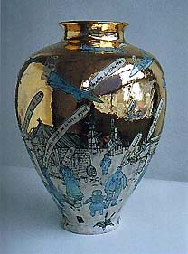
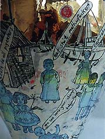
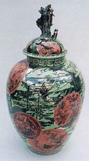
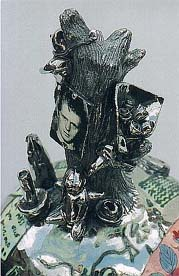
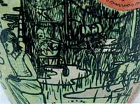

| Grayson
Perry
British ceramist, visual artist & writer
Grayson
Perry was born in Chelmsford in 1960. He studied at
Braintree College of Further Education and at Portsmouth Polytechnic.
His numerous solo exhibitions since the early 1980s include James
Birch Gallery, London (1984), Birch & Conran Gallery,
London (1987), Fig 1, London (2000) and the recent major solo presentation
of his work, Guerrilla Tactics, at the Stedelijk Museum, Amsterdam
and the Barbican Art Gallery, London (2002). He has participated
in many group exhibitions including Young Contemporaries (1981-2),
Objects of our Time, Crafts Council touring exhibition (1997-8),
Over the Top, Ikon Gallery, Birmingham (1999), The British Art Show
5, touring exhibition (2000), Protest and Survive, Whitechapel Art
Gallery, London (2000), New Labour, Saatchi Gallery, London (2001).
|  |
Dolls at Dungeness,
September, 11th 2001 - Immediately after the attack on the twin
towers, the media seemed to be full of reports of prejudice
and anger from all sides. In this pot the toys are just as much
the bigots and aggressors as the war planes flying overhead,
both are inanimate objects on to which we project our feelings.
My father helped to build Dungeness Nuclear Power Station. |
In the early 1980s
Grayson Perry was a member of the Neo-Naturist group, participating
in performance and film works. He has continued to make work in
a variety of media which now include embroidery and photography.
Yet Perry is best known for his ceramic works, creating classically
shaped vases decorated with figures, objects and text, which stand
within a tradition stretching back for centuries. The revealing
and often dark subject matter depicted on these pots is at first
disguised by their colourful, decorative nature. His chosen
topics include autobiographical images of himself, his transvestite
alter ego Claire, and his family, as well as references to political
events and an investigation of observed cultural stereotypes.
Over the last five years Perry has also used embroidery and photography
to explore these themes, most notably in the photograph Mother of
all Battles (1996) which shows Claire holding a gun, and wearing
Perry’s first embroidered folk costume. This was followed by Claire’s
Coming Out (2000), which Perry staged as a performance to present
a richly embroidered childlike dress for Claire, in this instance
merging his private female persona with his artwork.

Barbaric
Splendour, 2003 - Roadside shrines, post-Diana outpourings of common
feelings. Perceived as vulgar by those that regard the taste for
elaborate decorative arts of the lower orders as morally inferior.
Perry
looks back to his upbringing in the Essex countryside to find his
subject matter as presented on the vase, I was an Angry Working
Class Man (2001) which presents the recognizable iconography of
motorbikes, pub signs and other images of manhood, topped off with
the golden figure of an emasculated Pit Bull Terrier, mascot of
the stereotypical Essex Man. He also seeks to engage directly
with contemporary issues such as in the vase We've Found the Body
of your Child (2000), which deals not only with paedophilia, but
with child abuse within the home, or Dolls at Dungeness, September
11th 2001, which depicts seemingly innocent infant figures playing
in the bleak landscape, whilst war planes hover overhead. Operating
within the tradition of William Hogarth or James Gillray, he also
uses his ceramics to satirise other art forms, as in Gimmick, 1996,
which lists artists’ trademark methods, such as Jackson Pollock-drips
or Alexander Calder-mobiles. Perry employs and simultaneously
subverts the craft form of ceramics, revelling in its second class
status within world of fine arts, to explore challenging, yet witty
and thought provoking themes. Perry comments, ‘A lot of my
work has always had a guerrilla tactic, a stealth tactic. I want
to make something that lives with the eye as a beautiful piece of
art, but on closer inspection, a polemic or an ideology will come
out of it’.
Grayson
Perry, 43, lives and works in London. He won the 2003 Turner
Prize, the first time a potter has participated, let alone
won this prestigious UK prize. His comment on winning: "It's
about time a transvestite potter won the Turner"! He is represented
in the UK by Victoria
Miro Gallery.
The
above is a press release from Tate Britain, May 2003. Text and images
used by permission of the artist.
More Articles
More Artists of the Week
|